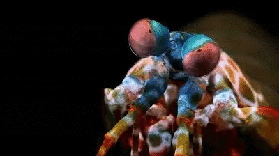

Fatos sobre o Stomatopoda
Descrição
Classificação Científica
- Reino: Animalia
- Filo: Arthropoda
- Subfilo: Crustacea
- Classe: Malacostraca
- Subclasse: Hoplocarida
- Ordem: Stomatopoda
Os estomatópodes são predadores ativos que caçam presas com o auxílio de um sentido de visão muito apurado e capaz de interpretar polarização no espectro ultravioleta e infravermelho). Apresentam uma grande variação de tamanho, que pode ir de poucos milímetros até aproximadamente 40 cm nas espécies maiores. Eles vivem em fundo consolidado, lodoso ou ainda arenoso, onde cavam seus buracos ou aproveitam-se dos orifícios deixados por outros animais para neles se instalar. São animais exclusivamente carnívoros, alimentando-se de camarões, caranguejos, moluscos, peixes e até mesmo outros da mesma ordem. O segundo par de patas, muito desenvolvido, é usado tanto para atacar a presa como para se defender. O urópodo, quando aberto, também funciona para defesa, como um escudo, fechando a galeria em que o animal esteja instalado. A fêmea desova no local onde se abriga e, em caso de perigo, enrola os ovos como uma bola, prendendo-os junto ao corpo até encontrar um abrigo mais protegido.
Também conhecidas como esquilas ou lagosta-boxeadora, espalhadas pelas costas dos mares tropicais e subtropicais. Além das patas, elas apresentam uma silhueta característica, devido ao grande comprimento aparentemente de seu abdómen. Os ovos ficam ligados por uma massa gelatinosa que a mãe carrega contra o ventre até que eclodem, limpando-os sem parar. São animais que apresentam comportamentos sociais muito variados, desde ameaças visuais contra predadores até comportamentos de côrte. De acordo com a anatomia da sua pata raptorial é possível distinguir entre dois grupos funcionais, as perfuradoras (spearers) ou as esmagadoras (smashers), sendo que cada um dos tipos apresenta sua própria variação comportamental e até mesmo de habitat.